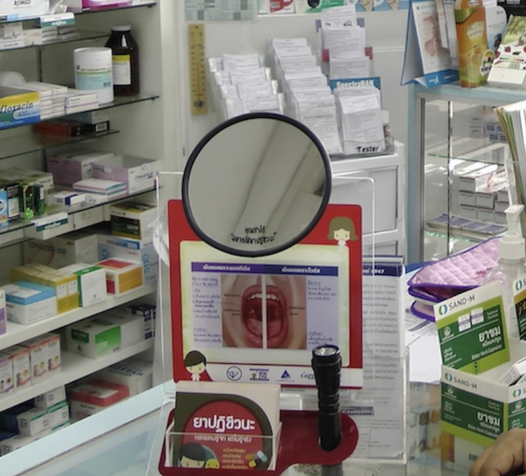

What can be done to ensure LMICs are not left behind?
individuals living in poverty are susceptible to infections and under poor living conditions (no access to basic sanitation facilities or health care) infections spread faster. Antibiotics, which may be available without prescription, are often used as substitutes for clean food, clean water, vaccines and diagnostics. Therefore, it will be impossible to address the challenges of antimicrobial resistance and lack of access to antibiotic therapy if other contributing factors are not addressed.
For countries where antibiotics can be accessed without a prescription, controlling antibiotic distribution should be highly prioritized. However, caution is warranted when a prescription system is introduced, especially when the demand for antibiotics is still high, as it can lead to unintentional consequences (such as the distribution of antibiotics on the black market) that are even harder to control. It is important to note that the overuse of antibiotics has become a social norm in many countries as it is influenced by the beliefs and attitudes of the individuals towards antibiotics as well as sociocultural factors, regardless of medical justifications.9
Meanwhile, social innovation for patients (such as a mirror toolkit for self-assessing whether their sore throat symptom is caused by a bacterial or a non-bacterial infection) enables them to make informed decisions and refrain from requesting antibiotics from prescribers/pharmacists, and eventually leads to reduction of unnecessary use of antibiotics.
Case study: Antibiotics Smart Use (ASU) program in Thailand
The ASU program is an implementation research project comprised of three phases
- Implementation of behavior change interventions
- Examination of the feasibility of scale up; and
- Identification of mechanisms for sustainability
The guiding principle of the ASU program is that antibiotics should not be used to treat non-bacterial infections. ASU started by trying to reduce unnecessary antibiotic use in patients with 3 conditions: upper respiratory tract infections, especially common colds with sore throat; acute diarrhea and simple wounds.
The program focused on simple measures, compatibility with the providers’ values, advantages with respect to current practice; performing testable interventions, and transparency.
In the beginning, ASU consisted of a network of researchers from Thailand’s Ministry of Public Health and pharmacists and doctors from Srinakharinwirot University and Chulalongkorn University.
In phase 1 (2007- 2008) they piloted educational and training reforms to improve prescribing in 10 hospitals and 87 primary health centres in one province. Antibiotic prescription, provider attitudes of effectiveness and knowledge of antibiotics, non-prescription rates in case of non-bacterial infections, and patient health and satisfaction were monitored.
In phase 2 (2008-2009) the same indicators were then used to scale up the program to three provinces and two hospital networks, counting to 44 hospitals and 621 primary health care centres.
The 3rd phase (2010 – Present) is focusing on long-term sustainability and scale up of ASU – initially to 22 hospital networks in 15 provinces, and then subsequently across the entire country.
| Characteristics | Phase 1 (1 year) |
Phase 2 (1 year, 3 months) |
Phase 3, transition period |
|---|---|---|---|
| Goals | Test effectiveness of ASU in changing antibiotic prescription behavior | Test feasibility of scaling up ASU model | Strengthen networks, assess scaling up mechanisms |
| Target | 1 province | 3 provinces and 2 networks of public and private hospitals | 22 hospital networks in 15 provinces |
| Funding agencies |
WHO, Thai FDA | HSRI, NHSO, Thai FDA | DSMDC, Thai FDA |
| Coordinating agencies |
Thai FDA | Thai FDA | DSMDC, Thai FDA, IHPP |
| Budget spending | US$ 33,000 | US$ 73,000 | US$ 123,000 |
| Spillover effect | No | Yes | Yes |
The program also had many simple but innovative community health interventions. For example, holding up a simple concave mirror to consumers trying to buy antibiotics for treating the common cold and cough was part of a new initiative in Thailand by community pharmacists to lower consumption of antibiotics.

Figure 4. Mirror toolkit for patients to self-assess their sore throat symptoms in Thai Pharmacies
After completion of Phases I-2, the following results were noted:
- Positive effects on reducing antibiotic prescribing. Antibiotic use was reduced by 18-46%
- The percentage of patients who did not receive antibiotics increased by 29.1%, whereas there was no change in the control groups who were not involved in the ASU program
- Patient health and satisfaction rates were high, 96%-99.3% of patients surveyed who did not refeive antibiotics recovered and felt better within 7-10 days after their medical visits
- Success in scaling up. The number of hospitals adopting ASU increased from 44 hospitals (2008) to more than 600 hospitals (2010).
The ASU project is having an impact beyond the borders of Thailand too and is now seen as a
model for replication in other parts of south-east Asia with interest elicited from as far away as
Africa and Latin America.
Read more about the ASU project on the